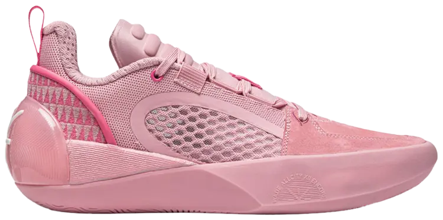

way of wade presenta.
Los WOW 12 Encore forman parte de la duodécima línea de sneakers de Dwyane Wade en colaboración con Li-Ning, una de las marcas chinas más influyentes en el básquet. La versión Encore es una edición de alto rendimiento, creada para ofrecer soporte extra y detalles premium respecto al modelo regular. El colorway "Cherry Blossom" está inspirado en los cerezos en flor japoneses, símbolo de belleza, renovación y fugacidad de la vida. Este diseño refleja la idea de equilibrio entre poder y delicadeza, algo que también define el estilo y legado de Wade en la NBA. El par se lanzó como una edición especial de colección, con gran demanda tanto entre sneakerheads como en jugadores de baloncesto de élite.